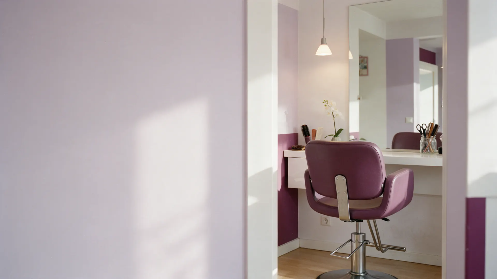
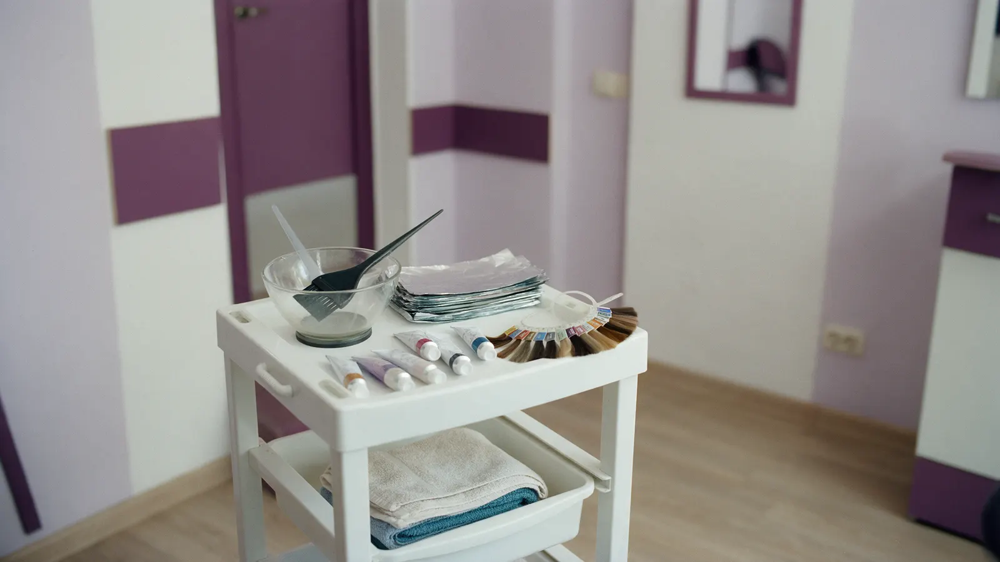
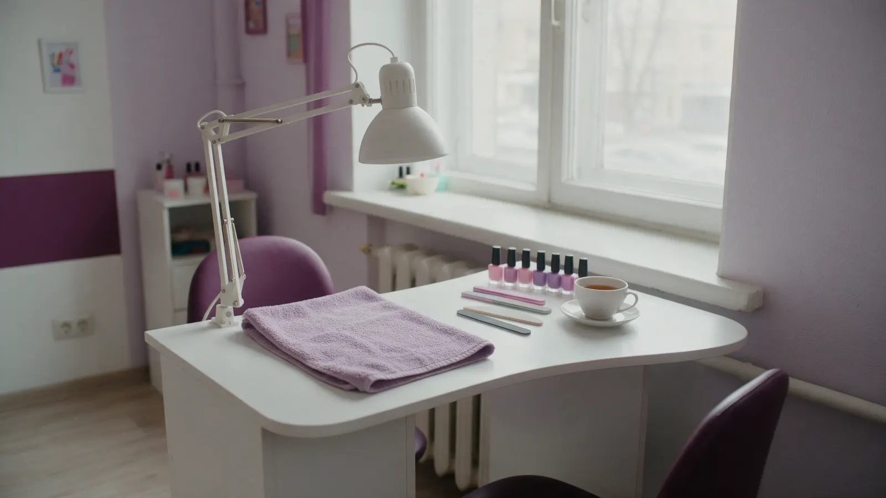
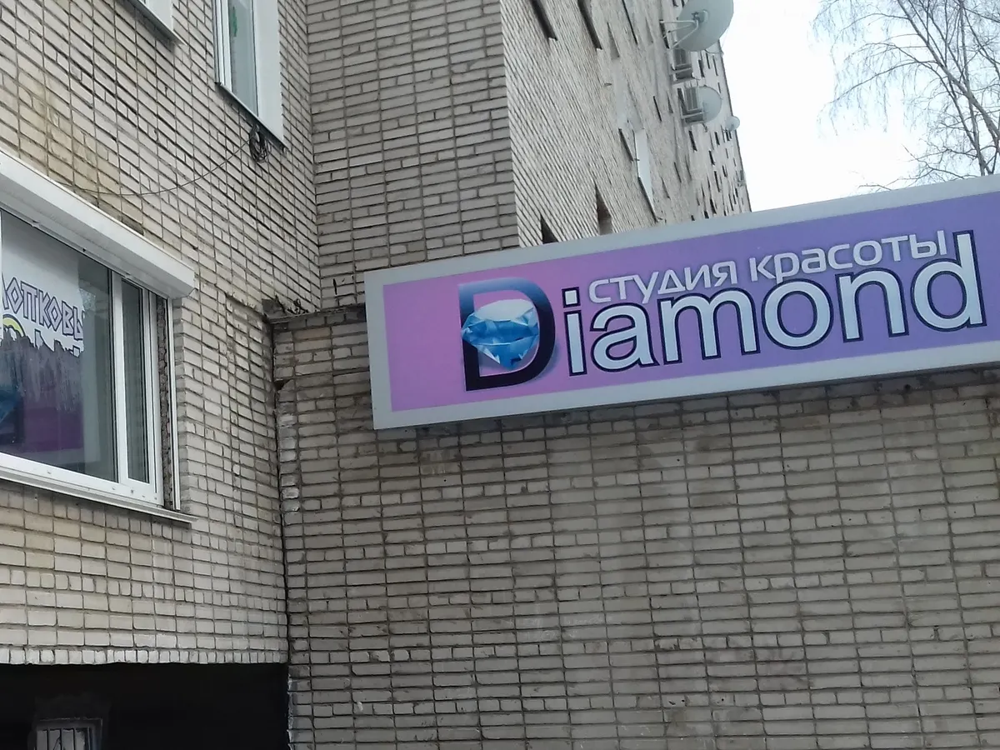

Парикмахерская и салон красоты на Будённого, 2
Парикмахерская в Глазове: стрижка, окрашивание и маникюр в одном месте
Клиентки пишут, что стрижка и окрашивание выходят недорого, а ещё можно сделать маникюр. Рейтинг 4,1 на Яндекс.Картах, 10 отзывов.

- Рейтинг 4,1 на Яндекс.Картах, 50 оценок
- Стрижка, окрашивание и маникюр в одном месте
- Пн-пт с 09:00 до 20:00, сб и вс с 10:00 до 18:00
Услуги и цены
На карточке Яндекс.Карт цен нет. Услуги ниже названы по отзывам клиенток, цены назовут при записи.
Волосы
- Стрижкауточнить
- Окрашиваниеуточнить
Ногти
- Маникюруточнить
Точный список услуг и цены назовут при записи.
Как записаться
- 01
Выбрали услугу
Стрижка, окрашивание или маникюр: цену назовут при записи.
- 02
Записались
По телефону +7 (912) 465-50-30 или во ВКонтакте.
- 03
Выбрали время
Работаем с понедельника по пятницу до 20:00, в выходные до 18:00.
- 04
Пришли
Будённого, 2.



Что пишут клиентки
Не дорого
Клиентка пишет, что стрижка и окрашивание выходят недорого.
Всё в одном месте
Другая клиентка: и за маникюром, и волосы в порядок привести.
Профессионал в своём деле
Из отзыва: мастером очень довольна, пользуется услугами много лет.
Оценка клиентов 4,1
50 оценок и 10 отзывов на Яндекс.Картах.
Отзывы с Яндекс.Карт
«Очень нравится данная парикмахерская. Стрижка и окрашивание выходит не дорого. Там можно ещё маникюр сделать.»
Екатерина Никитина · 25 октября 2025
«Девчонки замечательные! И за маникюрчиком , волосы в порядок привести. Всё в одном месте. А что ещё нужно?»
Катерина Третьякова · 12 января 2024
«Я тоже много лет пользуюсь услугами этой парикмахерской. Мастером очень довольна. Не только милая девушка, но и профессионал в своем деле.»
Елена Н. · 17 июля 2022
Отзывы с карточки на Яндекс.Картах, без правок.
Контакты
- Адрес
- Будённого, 2, Глазов
- Часы
- Пн-пт 09:00-20:00, сб-вс 10:00-18:00
- Телефон
- +7 (912) 465-50-30